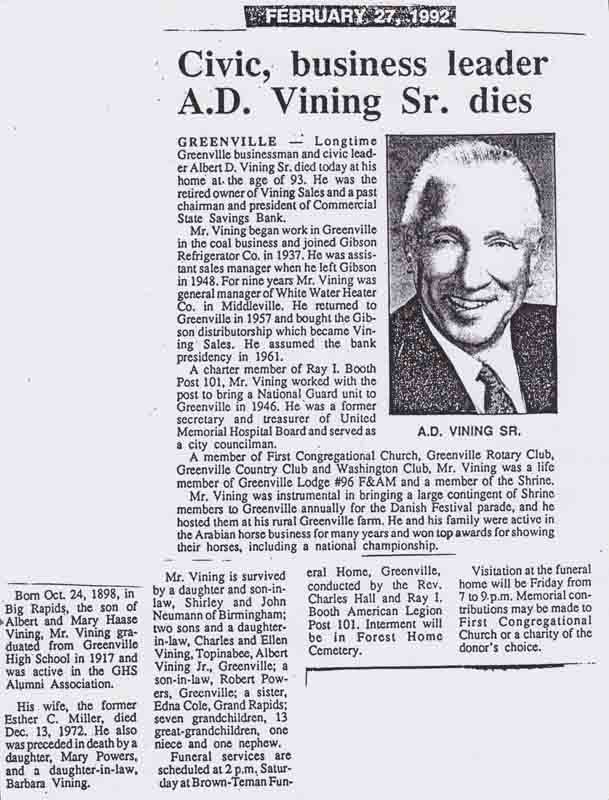
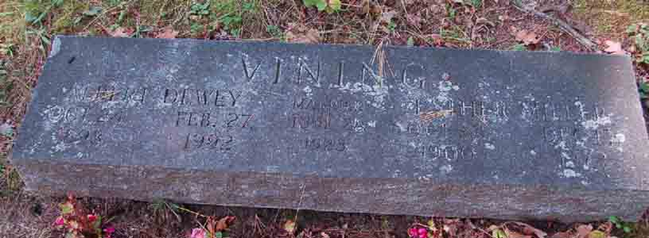
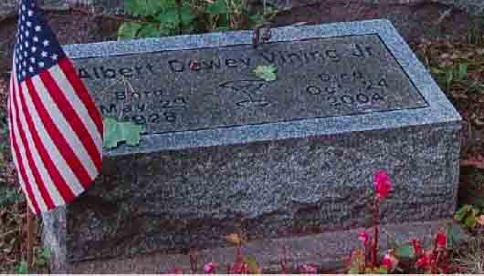

Census Data
| 1920 | 1930 | 1940 | |
| Albert Dewey Vining | 21 [see note below] |
31 | 41 |
| Esther C. (Miller) Vining | 29 | 39 | |
| Mary Charlotte Vining | 6 | 16 | |
| Shirley A. Vining | 4 y., 1 m. | 14 | |
| Charles M. Vining | 2 y., 11 m. | 12 | |
| Albert Dewey Vining Jr. | 1 y., 10 m. | 11 |


Death Data
Obituary for Albert Dewey Vining:

